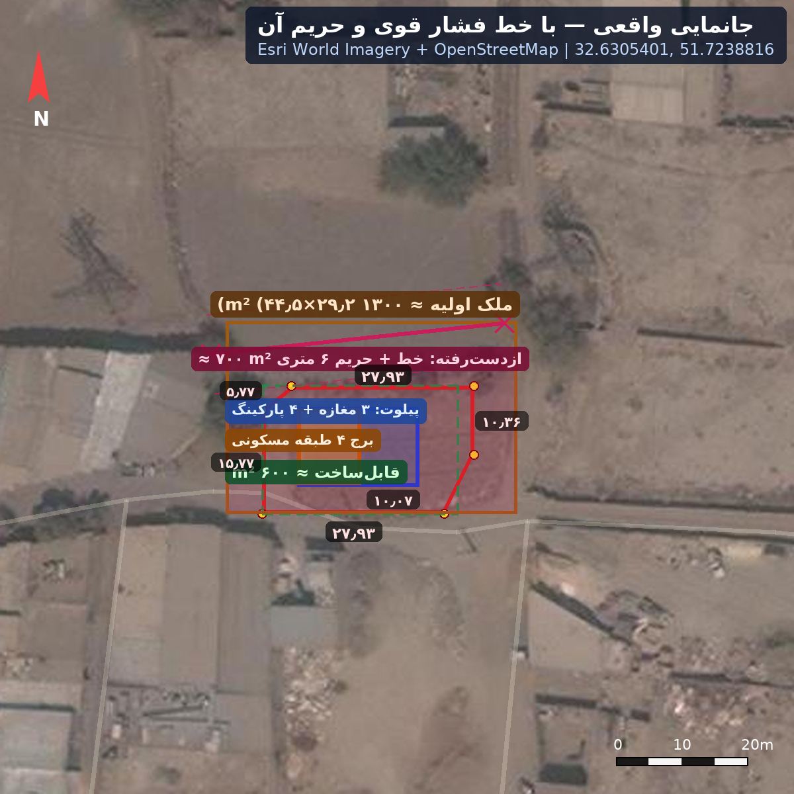
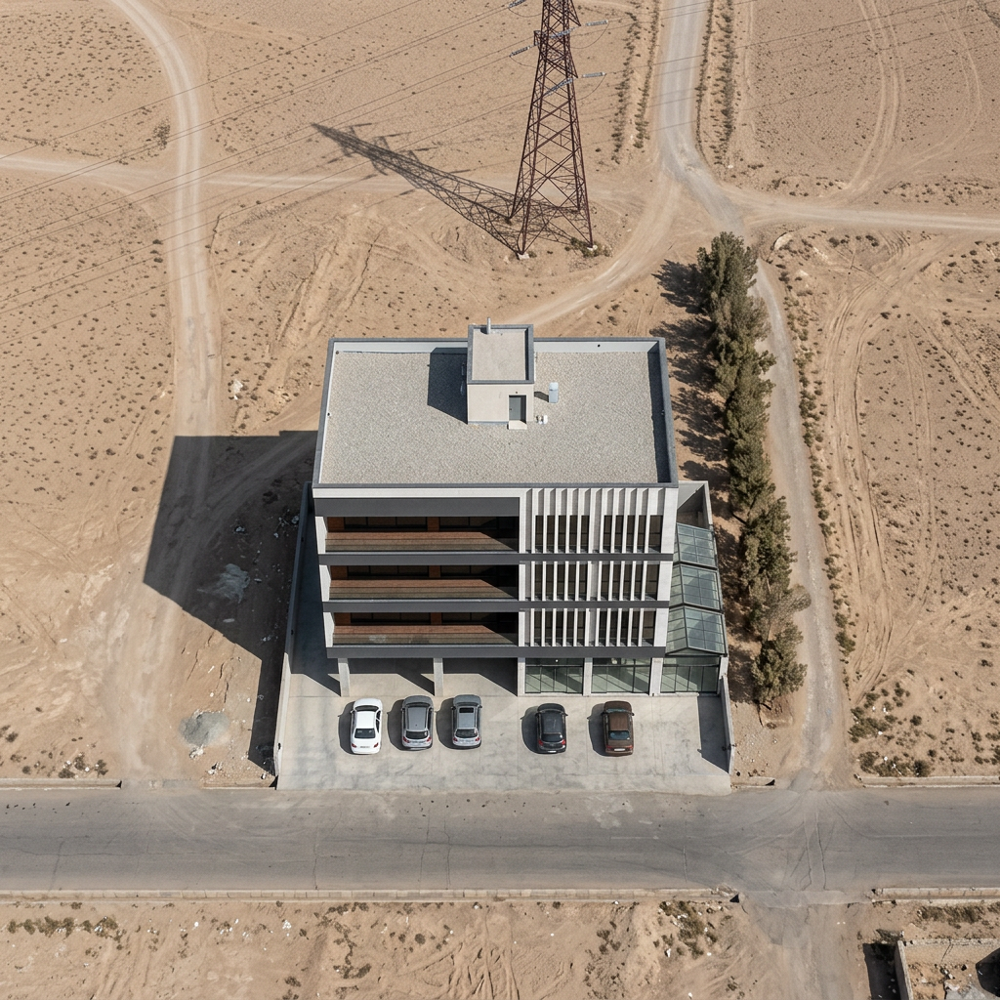

⚡ توجه حیاتی: بخش شمالی ملک اولیه (~۱۳۰۰ m²) بهدلیل عبور خط فشار قوی و حریم ۶ متری آن (~۷۰۰ m²) غیرقابل ساخت است؛ نوار قابلساخت ~۶۰۰ m² در جنوب، با فاصله ≥۱۱ متر از محور خط. ساختمان کاملاً در نوار امن جانمایی شده است.

جانمایی واقعی روی تصویر هوایی Esri — ملک اولیه (نارنجی)، خط فشار قوی و حریم ۶ متری (صورتی)، ناحیه ازدسترفته (هاشور)، پیلوت (آبی) و برج (نارنجی) در نوار امن

شبیهسازی فوتورئال هوایی — ساختمان مدرن ۵ تراز در پلات واقعی؛ دکل فشار قوی در شمال کاملاً دور از ساختمان
⚠ تصاویر «فوتورئال» شبیهسازی تبلیغاتی (AI) از روی جانمایی دقیق ژئورفرنس هستند؛ مبنای طراحی همان پلانهای مهندسی و فایل geo/meta.json است. مختصات: 32.6305401, 51.7238816